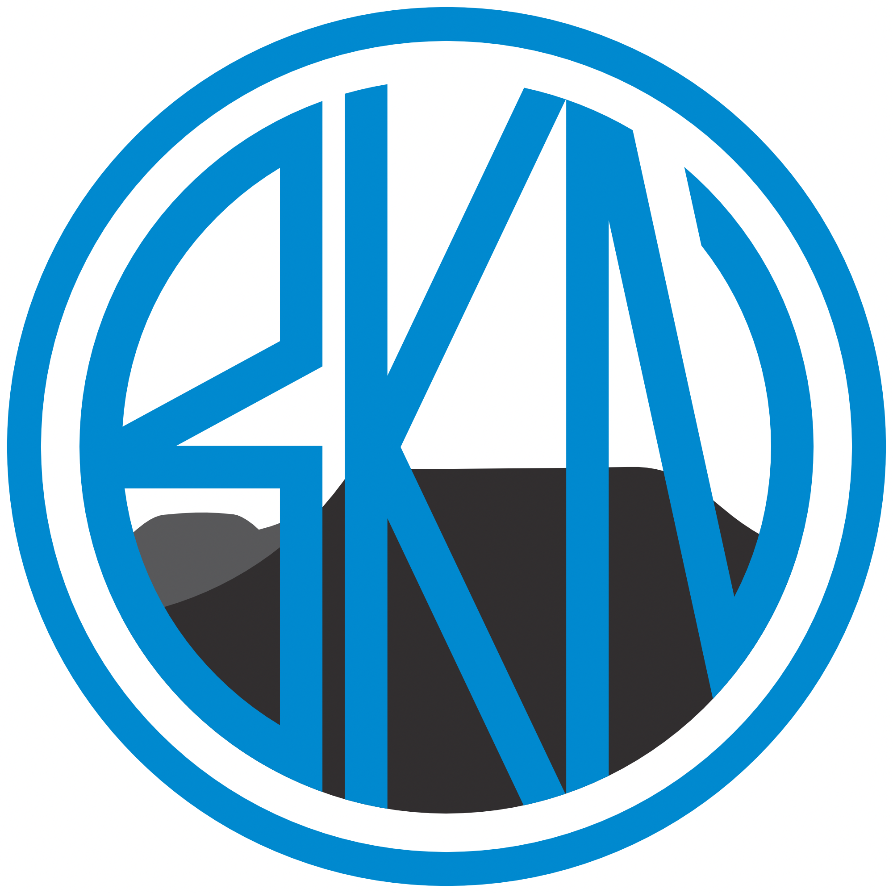

Běžecký klub Náchod
Připravujeme
Další klubové soustředění
Termín, místo a podrobnosti zveřejníme, jakmile budou potvrzené. Přihlašování zatím není otevřené.
TermínBude upřesněn
KapacitaBude upřesněna
CenaBude upřesněna

Běžecký klubKlubová soustředění, sport, tým a společné zážitky.
Termín, místo a podrobnosti zveřejníme, jakmile budou potvrzené. Přihlašování zatím není otevřené.
Rodič bude moci přihlásit více dětí v jednom formuláři. Po naplnění kapacity bude možné přihlásit dítě jako náhradníka. Platba proběhne bankovním převodem, její výše a termín budou oznámeny podle konkrétního soustředění.
Do archivu se budou ukládat již ukončená soustředění. Tato část se doplní při spuštění evidence.